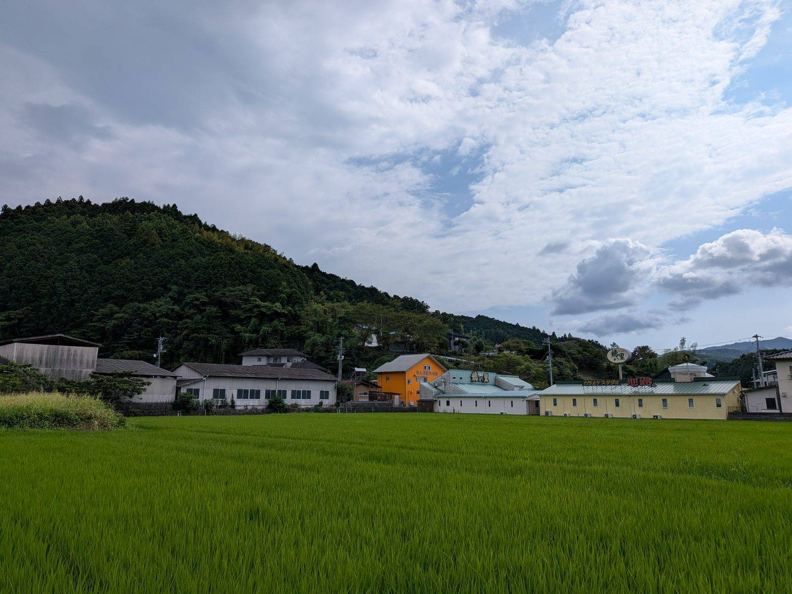

大洲の視点 ・ 出典: 大洲市「国土調査の実施状況」/国土交通省 令和８年６月26日報道発表/愛媛県「県内地籍調査実施状況」 ・ 約16分で読める

土地にも戸籍みたいなものがあるって、知ってた?
大洲はその調査が全国よりずっと進んでるんだ。
災害のあと早く元に戻せるかどうかに、じつは関わってくるの。
3行でいうと調べた資料 18本
「地籍調査」という言葉を、聞いたことがあるだろうか。
一筆ごとの土地について、所有者・地番・地目を調べ、境界と面積を測量する調査のことだ。
「土地の戸籍」とも呼ばれている。国土調査法が制定された昭和26年から続いていて、今年で75年になる。
大洲市の進捗率は83.01％。全国平均を30ポイント上回っている。
ここでいう「ポイント」は、パーセントどうしを引き算した差のことだ。全国平均は53％なので、83.01％－53％で約30ポイントになる。「30％上回る」とは意味が違い、そちらは53％の３割増し（53×1.3＝約69％）のことになってしまう。
もう１つ、読み違えやすい点がある。残りの17％は、「誰の土地か分からない土地」という意味ではない。
土地の持ち主は、法務局の登記簿に記録されている。地籍調査は持ち主も確かめるが、いちばんの仕事は境界の位置と面積を測ることにある。国土交通省によると、法務局にある地図や図面の半分ほどは、明治時代の地租改正のときに作られた地図（公図）などがもとになっている。そのため、境界や土地の形が現実と違うことが多く、登記簿に書かれた面積も正確でない場合があるという。
境界の線そのものは、じつはもう決まっている。法務省の説明では、土地の境目（筆界）は、その土地が登記されたときに定められた線で、持ち主どうしが話し合っても動かせない。分からないのは、その線が現地のどこを通っているかのほうだ。17％は、「持ち主は分かっているが、境界の位置と面積をまだ正確に測り直していない土地」と読むのが近い。
調査の中で、市がもめごとを裁くこともない。調査では、境界をはさんだ土地の持ち主に現地へ来てもらい、双方の合意のうえで境界を確かめてもらう。国の決まり（地籍調査作業規程準則）では、持ち主の確認が得られず調べられないときは、その部分を「筆界未定」と記録する。境界のもめごとに公の決着をつけるのは、法務局の筆界特定制度や裁判の役目である。
調べ始める前は「どうせ地味な数字だろう」と思っていた。実際は、大洲市がかなり進んでいる側にいて、しかも県内では遅れている側にいる、という妙な位置にあった。
市の「国土調査の実施状況」ページ（令和８年６月11日更新）によると、令和７年度末時点の内訳はこうなっている。
| 項目 | 面積 |
|---|---|
| 調査対象面積 | 432.22ｋｍ² |
| 地籍調査等実施済面積 | 355.04ｋｍ² |
| 19条５項指定面積 | 3.75ｋｍ² |
| 合計実施済面積 | 358.79ｋｍ² |
| 進捗率 | 83.01％ |
「19条５項指定面積」というのは市のページに説明があった。土地に関する様々な測量・調査の成果が、国土調査と同等以上の精度または正確さを有する場合に、国土調査法第19条第５項に基づいて国が指定した区域のことだ。
区画整理などで既に精密な測量が済んでいる土地は、改めて調査しなくてよい、という扱いになる。
検算しておく。355.04＋3.75＝358.79ｋｍ²。358.79÷432.22＝0.8301。83.01％で合っている。
ちなみに調査対象面積の432.22ｋｍ²は、大洲市の総面積432.12ｋｍ²（令和６年10月１日、大洲市統計書）とほぼ同じだ。
全国の「地籍調査対象地域」は国有林野と公有水面を除いた面積なので、大洲市にはその種の土地がほとんどないということになる。裏を返せば、他の自治体と比べるときに分母がずれにくい。
大洲市が調査を始めたのは昭和41年度（1966年度）。今は「第７次国土調査事業十箇年計画」（令和２～11年度）のもとで進めている。60年かけて83％である。
比較する相手を、年度をそろえて用意した。国土交通省が令和８年６月26日に公表した最新の報道発表資料には、令和７年度末時点の全国データが載っている。大洲市の数字と同じ時点だ。
| 区分 | 対象面積 | 令和７年度末の進捗率 |
|---|---|---|
| 全国 合計 | 287,966ｋｍ² | 53％ |
| うちDID（人口集中地区） | 12,673ｋｍ² | 27％ |
| うち宅地 | 19,453ｋｍ² | 52％ |
| うち農用地 | 77,690ｋｍ² | 71％ |
| うち林地 | 178,150ｋｍ² | 47％ |
| 愛媛県 合計 | 5,286.82ｋｍ² | 83.0％ |
| うちDID | 152.70ｋｍ² | 41％ |
| うち宅地 | 230.58ｋｍ² | 72％ |
| うち農用地 | 1,030.69ｋｍ² | 85％ |
| うち林地 | 3,872.85ｋｍ² | 85％ |
| 大洲市 | 432.22ｋｍ² | 83.01％ |
大洲市の83.01％は、全国の53％を30ポイント上回る。ただし愛媛県全体の83.0％とは、ほぼ同じである。
令和7年度末の地籍調査の進捗率
内訳を見ると、なぜ愛媛県が高いのかが分かる。林地の進捗率が全国47％に対して愛媛県は85％。38ポイントの差がある。
林地は面積が圧倒的に大きい（全国の対象面積287,966ｋｍ²のうち178,150ｋｍ²）ので、ここが進んでいる県は全体の数字も高く出る。
逆に全国・愛媛県ともに最も遅れているのがDID（人口集中地区）で、全国27％、愛媛県でも41％にとどまる。
令和7年度末の進捗率を、土地の種類ごとに
全国の対象面積287,966km²のうち、林地が178,150km²を占める。
市街地がいちばん進まない。理由は、国土交通省の地籍調査Webサイトに挙げられている。都市部は土地が細かく分かれていて小さな土地が多く、権利関係が複雑で、売り買いで持ち主が変わることも多い。土地の資産価値が高いので持ち主の権利意識が強く、境界の確認に非常に時間がかかる。隣の人とのトラブルを避けたいという気持ちから、現地の立ち会いに協力してもらえないことも多いという。
いまもめているから遅い、というより、確かめる相手と手間が多いから遅い、というほうが近い。
令和７年度の全国の実績は594ｋｍ²で、前年度の623ｋｍ²を下回った。
それでも令和２年度から令和７年度までの６年間の実績は4,348ｋｍ²になる。
第７次計画期間中の進捗率の伸びは、全国平均で２ポイントだった。年0.3ポイントほどしか動かない事業である。
国土交通省の資料には、進捗を後押ししている具体的な手法が２つ挙げられていた。どちらも最近導入されたものだ。
とくに２つ目が重い。地籍調査が進まない最大の理由は、所有者が見つからない、あるいは連絡しても返事がないことだ。
令和７年度は、林地の現地調査の６割で「返事がないので、みなしで確認した」という手続きが使われている。
それだけ所有者不明・連絡不能の土地が多いということでもある。
国土交通省は令和８年６月２日に「３ヶ年加速化施策パッケージ」も公表し、第７次計画の期末（令和11年度）に向けて集中的に取り組むとしている。
ここが今回いちばん意外だったところだ。
愛媛県のページによると、県全体の進捗率は83.0％で、全国９位。
大洲市の83.01％と、ほぼ同じである。大洲市は「県内で特に進んでいる」わけではなく、ちょうど県平均だった。
さらに、県内20市町の状況を見ると構図が変わる。令和８年４月１日時点で、完了11市町、実施中８市町、休止中１市町。
| 状況 | 市町 |
|---|---|
| 完了（11） | 八幡浜市、伊予市、西予市、東温市、久万高原町、砥部町、内子町、伊方町、松野町、鬼北町、愛南町 |
| 実施中（８） | 松山市、今治市、宇和島市、新居浜市、西条市、大洲市、四国中央市、松前町 |
| 休止中（１） | 上島町 |
県内で半数以上の市町が、すでに調査を完了している。隣の内子町も、西予市も、八幡浜市も終わっている。大洲市はまだ実施中で、残り17％が未調査だ。
令和8年4月1日時点。四角1つが1市町
県平均の83.0％が高く出ているのは、完了した11市町が100％として計算されているからで、実施中の８市町だけを見れば、大洲市の83.01％は決して低くないとも言える。
それでも「県内では終わっていないほうのグループにいる」というのは事実だ。
「全国平均を30ポイント上回る」と「県内では完了していない側」が、同時に成り立っている。
比べる相手を変えると評価が反転する、という分かりやすい例だと思う。
では、なぜ大洲市は60年かけても終わらないのか。市のページにも県のページにも理由の記載はなかった。まず着手年度から考えて、そのあとで市議会の答弁を見る。
愛媛県の一覧には、市町ごとの着手年度と完了年度が載っている。
大洲市の着手は昭和41年。ほぼ同じ時期に始めた自治体を並べてみた。
| 市町 | 着手年度 | 完了年度 | 要した年数 |
|---|---|---|---|
| 鬼北町 | 昭和38年 | 昭和63年 | 25年 |
| 愛南町 | 昭和38年 | 昭和59年 | 21年 |
| 松野町 | 昭和40年 | 昭和53年 | 13年 |
| 大洲市 | 昭和41年 | 未完了 | 60年経過 |
| 久万高原町 | 昭和43年 | 平成２年 | 22年 |
| 内子町 | 昭和45年 | 平成14年 | 32年 |
| 砥部町 | 昭和47年 | 昭和60年 | 13年 |
| 伊方町 | 昭和47年 | 昭和59年 | 12年 |
大洲市の１年前に始めた松野町は13年で終わっている。もっとも、完了した11市町のうち９つは町であり、規模がまるで違う。
実施中の８市町は松山市・今治市・宇和島市・新居浜市・西条市・大洲市・四国中央市・松前町で、松前町を除けばすべて市だ。
大洲市は平成17年に旧大洲市・長浜町・肱川町・河辺村が合併している。この記事ははじめ、「市町村合併で区域が広がったことも、完了を遠ざけていると考えられる」と書いていた。これは逆だった。合併した相手のほうが、先に終わっていた(下の答弁)。
面積で説明できるかも試したが、うまくいかなかった。西予市（約514ｋｍ²）も久万高原町（約584ｋｍ²）も大洲市（432ｋｍ²）より広いのに、どちらも完了している。「広いから遅い」という単純な話ではない。
山林の比率も同じだ。大洲市統計書によると、大洲市の総面積432.12ｋｍ²のうち林野面積は315.15ｋｍ²で、73％が山林である。
ただし愛媛県全体の林地の進捗率は85％で、全国の47％を大きく上回っている。
愛媛県は山林の調査がむしろ得意な県だ。「山が多いから遅れている」も、県内では説明にならない。
県と国の資料から分かるのは、ここまでである。この記事ははじめ、「なぜ大洲市だけ60年かかっているのかは分からなかった」「残り17％がどこなのかも分からない」と書いて、ここで止まっていた。
市議会の会議録を引き直したら、市は本会議で2回、答えていた。平成26年12月と、平成30年12月である。
平成30年12月の定例会で、産業経済部長がこう答えている。
昭和41年に旧肱川町を最初とし、昭和43年に旧河辺村、昭和44年に旧大洲市、昭和53年に旧長浜町において、地籍調査事業に着手をいたしております。旧肱川町は昭和53年に、旧河辺村は昭和57年に既に調査を完了しているところです。現在は未調査区域が残る旧大洲市及び旧長浜町において調査を毎年計画的に進めているところでございまして、平成30年３月31日現在の進捗率は、旧大洲市につきましては、調査対象面積が広いこともありまして、やや低く約65.0％、旧長浜町は約98.6％であり、大洲市全体では約80.4％となっております。
大洲市議会 平成30年12月定例会 会議録（2日目）産業経済部長の答弁
県の一覧にある「昭和41年着手」は、旧肱川町が始めた年だった。旧肱川町は12年、旧河辺村は14年で終えている。上の表の松野町や砥部町の13年と変わらない。
平成30年3月31日現在の進捗率(平成30年12月の市議会での答弁)
旧肱川町は昭和53年に、旧河辺村は昭和57年に、調査を完了している。
合併で加わった3つの町と村は、2つが昭和のうちに終わり、1つは98％を超えていた。残りのほとんどは、もとからの旧大洲市の区域にある。旧大洲市が始めたのは昭和44年なので、こちらも57年たっている。
残り17％がどの地区なのかまでは、答弁にも出てこない。分かったのは、旧大洲市と旧長浜町の中にある、というところまでである。
理由のほうは、平成26年12月の定例会で、議員が年数のかかるわけを聞いている。農山漁村整備課長は「一般的ではございますが」と前置きして、進まない要因を4つ挙げた。
同じ答弁は、広さの近い県内の市も並べている。調査面積が約428ｋｍ²の大洲市に対して、松山市(423ｋｍ²)が37％、宇和島市(413ｋｍ²)が67％、西条市(440ｋｍ²)が70％、今治市(410ｋｍ²)が83％。そのうえで「他市の状況も同様であるものと考えております」と述べた。どれも平成26年の時点の数字である。
この記事は「なぜ大洲市だけ」と問いを立てていた。市の答えは、「ほかの市も同じ」だった。ただ、答弁が並べた4つの市は、どれもまだ終わっていない市である。上で見たとおり、大洲市より広い西予市は終わっている。
あと何年かかるのかも、2回とも答えている。
| 答弁 | 残りの面積 | 1年に進む面積 | 完了までの見込み |
|---|---|---|---|
| 平成26年12月 | 約100ｋｍ² | 年間約2.5ｋｍ² | 約40年程度 |
| 平成30年12月 | 約84.0ｋｍ² | 約2.1ｋｍ² | 約40年 |
平成30年の残りは平成30年度当初の時点、1年に進む面積は直近5か年の平均。どちらも単純な割り算の見込み。
4年たっても、「あと約40年」は縮んでいなかった。残りの面積は減ったが、1年に進む面積も小さくなっていたからである。
いまはどうか。市のページの数字で引き算をすると、令和7年度末の残りは432.22－358.79＝73.43ｋｍ²になる。平成30年の答弁の速さ(1年に約2.1ｋｍ²)で割ると、あと約35年である。
ただ、平成30年度の初めに約84.0ｋｍ²だった残りは、8年たって73.43ｋｍ²。引き算では約10.6ｋｍ²、1年に約1.3ｋｍ²しか減っていない。調査の対象面積が当時の約428ｋｍ²から432.22ｋｍ²に変わっているので、きっちりした比べにはならないが、2.1ｋｍ²より速くなったとは読めない。
平成30年の答弁は、国が検討していた新しい測り方(空中写真やレーザーの測量)が使えるようになれば、山村部は大幅に速くなる、とも述べていた。上で書いたリモートセンシングが、それにあたる。大洲市がいま使っているかどうかは、確かめていない。
進捗率の話ばかりしてきたが、そもそもこれが進んでいると何が変わるのか。
国土交通省の地籍調査Webサイトと報道発表資料に、効果が整理されている。
大洲市にとって、１つ目の意味はとくに大きい。平成30年７月豪雨では市街地の約1,372ｈａが浸水し、建物被害は愛媛県内で最多の2,073棟だった。
大規模な災害復旧を経験した自治体にとって、境界が確定しているかどうかは机上の話ではない。
効果は、災害のときだけではない。土地を売るときや、土地を分けて（分筆して）一部を売ったり贈ったりするときも、境界が決まっていなければ、そのたびに隣の人と境界を確かめて測り直すことになる。国土交通省は、立ち会いが得られず「筆界未定」になった土地は、分筆ができず、事実上取引が難しくなると書いている。道路の整備や区画整理のようなまちづくりの事業でも、調査がされていないと境界の確認が長引くことがあり、その費用は事業をする側が負担することになる。調査の成果は、固定資産税を計算するときの基礎情報にもなる。
大洲市の議会でも、この話が出ている。令和6年9月の定例会で、学校や保育所の跡地を売る話になったとき、副市長はこう答えた。
特に学校や保育所跡地など面積が広い土地の場合には、境界確認や分筆に数百万円以上という多額の費用が必要であり、国土調査が終了していない地域などは、さらに費用が高くなる傾向がございます。
大洲市議会 令和6年9月定例会 会議録（2日目）副市長の答弁
その費用が売れる値段を上回りそうなときは、市の持ち出しになるので、売る手続きを進めないようにしている、とも述べている。調査が済んでいない土地は、売ること自体が割に合わなくなることがある。
逆に、地籍調査が進まない要因として同サイトが挙げているのは、財政や職員体制の制約から調査が後回しになりがちだという点だ。
１年で数ｋｍ²しか進まない事業に、毎年予算と人を張り続けられるかどうかという話になる。
お金の出どころも書いておく。国土交通省によると、市町村が調査をするときの費用は、国が２分の１、都道府県が４分の１を補助する。市町村と都道府県が負担する分も、その80％が特別交付税で手当てされるので、市町村の実質の負担は５％になる。土地の持ち主に、個別に費用を求めることはない。
ただし、大洲市の答弁には、ちがう数字が出てくる。平成26年12月の定例会で、市は「市の実質負担率は地籍調査費用の約３分の２」と答えた。直近3年の平均で、地籍調査の費用は年間約9,500万円、そのうち市の負担が約6,000万円だったという。補助の対象になるのは測量などの委託料が主で、職員の人件費は対象にならないからである。
国の「５％」は、補助の対象になる経費について、交付税の手当てまで入れた数字である。市の「３分の２」は、人件費まで入れた費用の全体に対する数字で、交付税の手当てを引いたあとかどうかは、答弁からは分からない。物差しがちがうので、どちらかが間違いというわけではない。ただ、進まない要因の4つ目にあった「予算と職員」の中身には、こちらの数字のほうが近い。
地味な数字だと思って開いたら、「比べる相手で評価が変わる」という典型例だった。
それでも、昭和41年から60年間、市の職員が毎年少しずつ測り続けて83％まで来た、という事実は残る。
１年で数ｋｍ²ずつしか進まない仕事を、担当者が何代も入れ替わりながら続けてきた結果だ。
残り17％のほとんどは、旧大洲市の区域にある。どの地区なのかまでは、分からなかった。
次に何か大きな災害が起きたとき、その17％に入っている地域と入っていない地域で、復旧の速さに差が出る。
そう思うと、この数字は思ったより自分に関係のある数字だった。
この記事をサイトに掲載した日: 2026/08/18